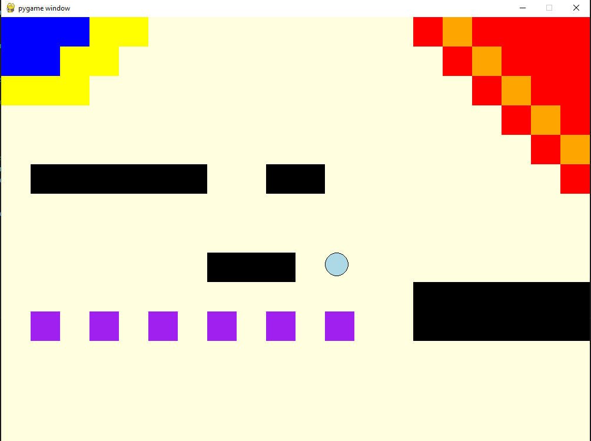

The first Sprint included the basic Setup to start our Programming Journey
- All group members installed Python and Pygame
- We set up our Project repository and invited all members and tutors (Marco, Lukas)
- We added a flake8 test as our first GitHub action (Edwin)
- We created a basic pygame template to begin with (Lukas)

- We added key (Marco) and mouse (Lukas) event handlers
- We added a start button to switch from menu to game state (Edwin)

In the second Sprint we had to draft what our game could look like and start with the basic game functions
- Edwin showed his idea and all group members agreed on that
- We created sketches of what the game could look like (Edwin)
- We created a arena class and added an arena object into our game (Edwin)
- We created a BasicRobot class and added an object of this class for our first Robot (without the direction of the object beeing shown) (Lukas)
- We added the movement of our first Robot object through key handlers, so you can control the robot by pressing w, a, s, d (Marco)
For the third Sprint our goal was to extend our robot class and to make new levels easier to add
-We created levels as text files to read them from hard disc [Edwin]
-We agreed on what assets to use as graphical tiles
-We extended our Robot class by representing accelerations and speed and adding more Robots (foes, players) [Lukas]
-We added Weapon assets to resemble first functionalities (aiming, foes targeting player) [Marco]
-For our Robots assets we found a few fitting ones but didnt include them yet
-To check our Code for flake8 errors we all added a flake8 extensions on our local machines
Source for Tank assets